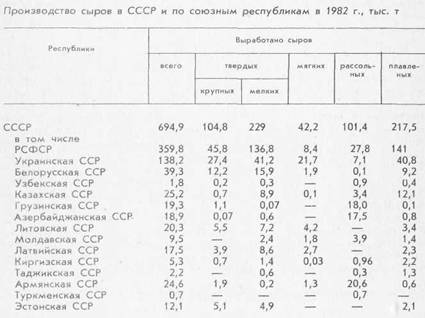

От крестьянской артели до наших дней

В 1966 г. отмечалось 100-летие промышленного сыроделия в нашей стране. В 1913 г., когда производство сыра в царской России достигло наивысшего уровня, выработка его составила 7,8 тыс. т. Спустя полстолетия, в 1965 г., в Советском Союзе было выработано 296 тыс. т сыра, т. е. в 38 раз больше. В 1982 г. производство сыра достигло 695 тыс. т — за 17 лет оно увеличилось более чем в 2,3 раза.
Нельзя сказать, что в рационе каждой семьи сыр занял свое место, но то, что «вкус» к сыру привит, очевидно. До революции сыр вырабатывался в ряде губерний Центральной России, на Северном Кавказе, в Закавказье, Западной Сибири, Прибалтике, Белоруссии. На Украине, например, промышленное сыроделие возникло, по существу, в советское время.
Сейчас сыр вырабатывается во всех союзных республиках. Особенно возросло производство его за последние годы на Украине, в Прибалтике. Как распространился сыр по стране, показывает таблица.

В Советском Союзе освоено производство сыра многих широко распространенных в мире видов и созданы новые разновидности его, завоевавшие большую популярность.
Разработка технологии новых сыров началась в 30-х годах. Первенцем был советский сыр (так его и назвали — советский), и на его долю выпало больше внимания, чем на долю последующих видов.
В те годы организовывались широкие дегустации сыра с участием не только советских и зарубежных специалистов, но и известных деятелей культуры. Иногда дегустации проходили в только что открывшемся тогда первом в стране магазине «Сыр» в Москве на улице Горького.
Неузнаваемо изменилась техническая база сыроделия. Нынешний сыродельный завод — индустриальное предприятие, где основные производственные процессы выполняют механизмы.
А вот как описывал работу в сыроварне до революции мастер-сыродел В. Тупицын из Ярославской области: «Каждую головку (сыра) приходилось отжимать руками не менее 15 мин. Солили сыр в формах, обливая каждую головку соляной гущей в течение 7–8 дней. Созревшие головки сыра завертывали в кишечные пленки. Работа была изнурительной, а работать приходилось по 15 и даже 18 часов каждый день, так как выходных дней и очередных отпусков тогда не было».
Все сыроварни размещались, как правило, в тесных деревянных домах.
Уже в 30-х годах была заложена индустриальная база сыроделия. В этот период в г. Угличе создается Центральная научно-исследовательская лаборатория сыроделия, впоследствии преобразованная во Всесоюзный научно-исследовательский институт маслодельной и сыродельной промышленности, организуется подготовка кадров средней и высшей квалификации.
Десятки техникумов, ПТУ, вузов готовят теперь специалистов-сыроделов. Среди них множество замечательных мастеров своего дела, в чьих руках сыр становится продуктом высокого качества.
И вот сегодня наша страна занимает одно из первых мест в мире по производству сыра, опередив Италию, где этот продукт вырабатывается тысячелетиями, Голландию, Данию и Швейцарию — страны традиционного сыроделия, откуда ввозился сыр в Россию.